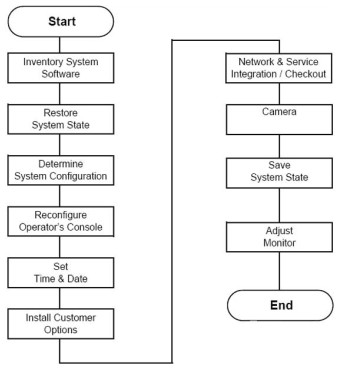
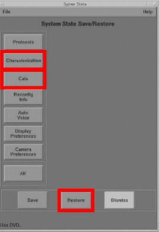

Operating Documentation
Direction 5193574-800, Rev# 22
LightSpeed 7.X Service Methods
Module Version 1.0, Version Date 4/22/10
Operating Documentation |
This section describes the reconfiguration, system state restore, options installation, and monitor adjustment procedures.
Illustration 1: Computer Integration and Configuration Process Overview

Locate the box with the system software and option DVD disks, system order sheets, product locator cards, and system reconfig DVD. This tray is in the top shelf on the Lean cart labeled “Software. If not Lean packed, locate these items.”
You should find the following software CD documents:
System Operating Software CD set
Learning and Reference Guide
Tip Simulator
Advanced Applications
Service Information
| NOTE: | There may be other items in addition to those above. |
| Required Persons | Preliminary Reqs | Procedure | Finalization |
| 1 (FE or mechanical supplier) |
None required.
Your system should have a system state DVD, located in the software box on the Lean cart.
The system state DVD contains:
Characterization
Calibrations
Gen Cal
Other Data
If you cannot locate the shipped system state DVD and your console data is not present, you must do a complete recalibration of your system. If the system data is present and your Save State disk is missing, complete a Save State now.
The installation process uses all the system state files. At this time, use the system state DVD to restore all files.
If you are not on the Service Desktop, click the [SERVICE DESKTOP] Icon.
Click the [UTILITIES] icon.
Select [SYSTEM STATE].
Insert the DVD into the DVD drive.
Select [CHARACTERIZATION].
Select [CALS].
Illustration 2: System State Restore

Select [RESTORE] to restore the system characterization and phantom calibration files to the system.
Restore State can take as long as ten minutes, although typical times average about three minutes. When Restore State completes, dismiss the tool, and proceed to the next section.
If any error should occur during the restore process, see the Software Load Procedure manual (Load From Cold) for information regarding possible error messages and their recovery.
Click [NO] for the Reset Scan Hardware popup message.
Click [DISMISS].